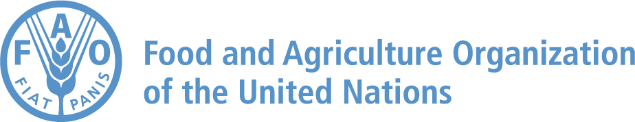

Capacity & Exchange · A two-page briefThe FAO Drylands School
Training the champions of the world's drylands
A global FAO platform for training, capacity development and the exchange of best practices in dryland forests, rangelands and agrosilvopastoral systems.
iWhat it is
The FAO Drylands School trains “champions” – the planners, practitioners and policymakers who advocate for and operationalize transformative change in the management of dryland forests, rangelands and agrosilvopastoral systems.
An initiative of the COFO Working Group on Dryland Forests and Agrosilvopastoral Systems (a subsidiary body of FAO's Committee on Forestry, established 2016), it has run since 2022. Each edition is hosted in a different dryland region with universities, research institutes, UN bodies and the host government, back-to-back with a Working Group session, and supports the UN International Year of Rangelands and Pastoralists (IYRP) 2026.
1How a school works
- eLearning foundation. Selected participants first complete the FAO eLearning Academy course Transforming dryland forests and agrosilvopastoral systems and prepare a case study from their own work.
- Open call & selection. Partners disseminate an open call; 20–25 champions are chosen on motivation, capacity and potential impact, balancing gender, geography and diversity.
- The four-day school. A professionally facilitated, English-language course of technical lectures, group work on participants' own case studies and peer-to-peer learning.
- Field day. A day in the field with local communities and stakeholders – seeing restoration, rangeland and agrosilvopastoral practice first-hand.
- Certificate & network. Graduates receive a certificate and digital badge, and join the alumni network – a standing community of practice with continued engagement.
2Four schools, four drylands
| Edition | Host & dates | Theme |
|---|---|---|
| 1st · 2023 | Amman, Jordan Sep 2023 | Transformative approaches in agrosilvopastoral systems |
| 2nd · 2024 | Nairobi, Kenya 12–15 Sep 2024 | Monitoring restoration in agrosilvopastoral systems for sustainability & ecosystem services |
| 3rd · 2025 | Ulaanbaatar, Mongolia 7–10 Jul 2025 | Improving the governance of dryland forests, rangelands & agrosilvopastoral systems |
| 4th · 2026Upcoming | Adelaide, Australia Jul 2026 | Indigenous knowledges & practices in drylands and fire management |
3A growing alumni network
Graduates form a standing, South–South community of practice that keeps exchanging knowledge and mentoring new cohorts between editions. The network already spans more than 25 countries across Africa, the Middle East, Asia, Europe and Latin America. Explore the full, filterable alumni map on the DRIP Community page.
4Partners
Editions have been delivered with the UNCCD G20 Global Land Initiative, Community Jameel, CIFOR-ICRAF, WOCAT (CDE, University of Bern), the Swedish University of Agricultural Sciences, the Agricultural Research Council of South Africa, the IYRP Global Alliance, the GEF-7 DSL-IP, the Kenya Forest Service, host universities and the governments of Jordan, Kenya, Mongolia and Australia.
Champions are recruited through an open call disseminated by FAO and partners ahead of each edition. To be ready, complete the FAO eLearning course Transforming dryland forests and agrosilvopastoral systems and prepare a short case study from your own work in drylands. Calls and selection are coordinated by the COFO Working Group secretariat with the host government and partners.
About this brief
A two-page overview of the FAO Drylands School, prepared for the Drylands Restoration Initiatives Platform (DRIP). Full documentation – concept notes, agendas, reports and the alumni roster & map – is on the DRIP Community page and its document repository.
Partners & affiliation
Contact & applications: the COFO Working Group on Dryland Forests and Agrosilvopastoral Systems secretariat, FAO.